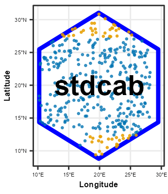
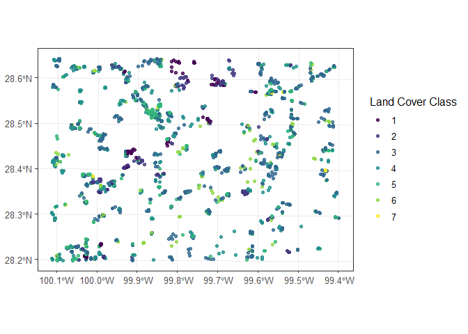
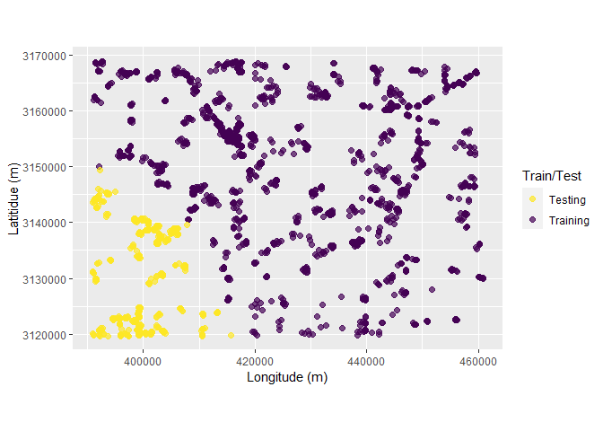

The goal of the stdcab package is to apply spatial thinning on multi-class spatial point data, spatial cluster analysis for random and repeated cross-validations which partitions data into training and testing set compatible to tidy-modeling resamples. The package allows to run semivariance analysis, plotting and spatial blocking of observations.
Installation
You can install the released version of stdcab from CRAN with:
{r install.packages("stdcab")
To install the latest stdcab version from GitHub use:
remotes::install_github('suvedimukti/stdcab')
#> Downloading GitHub repo suvedimukti/stdcab@HEAD
#> vctrs (0.6.2 -> 0.6.3 ) [CRAN]
#> cpp11 (0.4.4 -> 0.4.5 ) [CRAN]
#> ggplot2 (2a7ca74e2... -> 1f27ffec3...) [GitHub]
#> Installing 2 packages: vctrs, cpp11
#> Installing packages into 'C:/Users/suved/AppData/Local/R/win-library/4.3'
#> (as 'lib' is unspecified)
#> package 'vctrs' successfully unpacked and MD5 sums checked
#> Warning: cannot remove prior installation of package 'vctrs'
#> Warning in file.copy(savedcopy, lib, recursive = TRUE): problem copying
#> C:\Users\suved\AppData\Local\R\win-library\4.3\00LOCK\vctrs\libs\x64\vctrs.dll
#> to C:\Users\suved\AppData\Local\R\win-library\4.3\vctrs\libs\x64\vctrs.dll:
#> Permission denied
#> Warning: restored 'vctrs'
#> package 'cpp11' successfully unpacked and MD5 sums checked
#>
#> The downloaded binary packages are in
#> C:\Users\suved\AppData\Local\Temp\RtmpE9dCl8\downloaded_packages
#> Downloading GitHub repo tidyverse/ggplot2@HEAD
#> vctrs (0.6.2 -> 0.6.3) [CRAN]
#> Installing 1 packages: vctrs
#> Installing package into 'C:/Users/suved/AppData/Local/R/win-library/4.3'
#> (as 'lib' is unspecified)
#> package 'vctrs' successfully unpacked and MD5 sums checked
#> Warning: cannot remove prior installation of package 'vctrs'
#> Warning in file.copy(savedcopy, lib, recursive = TRUE): problem copying
#> C:\Users\suved\AppData\Local\R\win-library\4.3\00LOCK\vctrs\libs\x64\vctrs.dll
#> to C:\Users\suved\AppData\Local\R\win-library\4.3\vctrs\libs\x64\vctrs.dll:
#> Permission denied
#> Warning: restored 'vctrs'
#>
#> The downloaded binary packages are in
#> C:\Users\suved\AppData\Local\Temp\RtmpE9dCl8\downloaded_packages
#> ── R CMD build ─────────────────────────────────────────────────────────────────
#> checking for file 'C:\Users\suved\AppData\Local\Temp\RtmpE9dCl8\remotes25801e406f7c\tidyverse-ggplot2-1f27ffe/DESCRIPTION' ... checking for file 'C:\Users\suved\AppData\Local\Temp\RtmpE9dCl8\remotes25801e406f7c\tidyverse-ggplot2-1f27ffe/DESCRIPTION' ... ✔ checking for file 'C:\Users\suved\AppData\Local\Temp\RtmpE9dCl8\remotes25801e406f7c\tidyverse-ggplot2-1f27ffe/DESCRIPTION' (437ms)
#> ─ preparing 'ggplot2': (16.1s)
#> checking DESCRIPTION meta-information ... checking DESCRIPTION meta-information ... ✔ checking DESCRIPTION meta-information
#> ─ checking for LF line-endings in source and make files and shell scripts (1s)
#> ─ checking for empty or unneeded directories
#> ─ building 'ggplot2_3.4.2.9000.tar.gz'
#>
#>
#> Installing package into 'C:/Users/suved/AppData/Local/R/win-library/4.3'
#> (as 'lib' is unspecified)
#> ── R CMD build ─────────────────────────────────────────────────────────────────
#> checking for file 'C:\Users\suved\AppData\Local\Temp\RtmpE9dCl8\remotes25804e99304b\suvedimukti-stdcab-e0bbf4b/DESCRIPTION' ... checking for file 'C:\Users\suved\AppData\Local\Temp\RtmpE9dCl8\remotes25804e99304b\suvedimukti-stdcab-e0bbf4b/DESCRIPTION' ... ✔ checking for file 'C:\Users\suved\AppData\Local\Temp\RtmpE9dCl8\remotes25804e99304b\suvedimukti-stdcab-e0bbf4b/DESCRIPTION' (518ms)
#> ─ preparing 'stdcab': (524ms)
#> checking DESCRIPTION meta-information ... checking DESCRIPTION meta-information ... ✔ checking DESCRIPTION meta-information
#> ─ checking for LF line-endings in source and make files and shell scripts
#> ─ checking for empty or unneeded directories
#> ─ building 'stdcab_0.1.0.tar.gz'
#>
#>
#> Installing package into 'C:/Users/suved/AppData/Local/R/win-library/4.3'
#> (as 'lib' is unspecified)Repeated Cluster CV: rsample compatible
This function is extended based on spatial_cluster_sample, which is a wrapper around spatial_clustering_cv function of sptialsample package.
Load dataset
# load dataset
library(stdcab)
data(landcover)
# create another dataset based on landcover data that comes with the package
#
dspatial <- landcover
# examine data
head(dspatial)
#> Simple feature collection with 6 features and 32 fields
#> Geometry type: POINT
#> Dimension: XY
#> Bounding box: xmin: 392210.5 ymin: 3119625 xmax: 399267.2 ymax: 3119778
#> Projected CRS: NAD83 / UTM zone 14N
#> MBLU MDIS MENT MGRN MHOM MNDSI MNDVI
#> 1 66.63188 1.6617853 2.950356 79.29950 0.4467591 0.27364541 0.3530703
#> 2 63.39825 1.9870977 2.960603 73.69209 0.4019742 0.29720028 0.4029944
#> 3 69.88172 1.6976533 2.942974 80.93514 0.4405100 0.22758467 0.2885415
#> 4 90.20121 1.1538607 2.595928 101.55721 0.5584459 0.08908733 0.0774211
#> 5 92.37401 0.9766353 2.472715 101.19852 0.6005212 0.04736083 0.0158674
#> 6 63.28209 1.6095205 2.905691 78.96302 0.4605569 0.32877674 0.4410174
#> MNDWI MNIR MPC1 MPC2 MPC23 MRED MSAVI MSTD
#> 1 0.51515239 138.9199 159.1613 102.4536 202.6218 66.55164 0.51515239 21.25050
#> 2 0.55808490 137.4047 148.8866 104.3592 204.5810 58.23234 0.55808490 19.98415
#> 3 0.43974239 128.5910 161.2001 102.6947 190.8658 71.33220 0.43974239 21.58185
#> 4 0.13333992 121.6026 200.3034 100.9832 169.4937 104.52521 0.13333992 26.70559
#> 5 0.02596568 111.4324 200.0531 100.8161 158.5089 108.05662 0.02596568 26.70048
#> 6 0.60552987 156.1672 159.4131 102.6292 221.1018 60.83709 0.60552987 21.32887
#> SAVG SAVI SBLU SDIS SENT SGRN SHOM
#> 1 0.7719360 0.09421593 8.007267 0.7173829 0.2979607 13.223900 0.1305707
#> 2 1.0951935 0.15705697 9.696568 0.9694563 0.3330230 13.901611 0.1387346
#> 3 0.8193193 0.10658609 7.640749 0.7711866 0.2884212 11.779700 0.1295736
#> 4 0.6762000 0.12961513 8.087468 0.6171818 0.4649801 9.553970 0.1582553
#> 5 0.5402425 0.09479591 5.684382 0.5020353 0.4690081 6.982191 0.1469829
#> 6 1.0425932 0.09469646 8.115348 0.8179208 0.3255548 11.952452 0.1369844
#> SHPI SNDSI SNDVI SNIR SPC1 SPC2 SPC3 SRED
#> 1 2.064817 0.06072264 0.09421593 19.990943 22.00438 17.457164 3.453199 13.53963
#> 2 2.818856 0.09894260 0.15705697 26.054171 24.42861 25.079633 4.042181 17.20263
#> 3 2.515565 0.05936204 0.10658609 16.465150 20.52350 14.532001 4.098715 14.22547
#> 4 2.451424 0.05418211 0.12961513 12.712686 18.92016 12.433632 3.768943 14.64595
#> 5 1.591254 0.04073361 0.09479591 9.757403 13.83072 8.766206 3.414756 10.42752
#> 6 1.975009 0.06062318 0.09469646 18.062159 20.22403 16.856885 3.163099 13.56793
#> SSTD geometry Class_name
#> 1 2.182833 POINT (392210.5 3119625) 4
#> 2 2.590231 POINT (395942.6 3119661) 4
#> 3 1.982273 POINT (393647 3119704) 4
#> 4 2.066033 POINT (397385.1 3119726) 3
#> 5 1.399689 POINT (397434.5 3119731) 3
#> 6 2.185156 POINT (399267.2 3119778) 4
# Class_name is the dependent (response ) data with seven classes (1 through 7)Visualize the data
# load ggplot 2 for visualization
library(ggplot2)
ggplot(data = dspatial)+
geom_sf(aes(colour = factor(Class_name)), size = 1.5, alpha = 0.8)+
scale_colour_viridis_d()+
labs(color = "Land Cover Class")+
theme_bw(12)
Apply repeated cluster sampling on sf data
To make visualization easy lets make five folds and five repeats resulting 25 splits of data based on kmeans clustering.
# setting seeds
set.seed(1318)
spc_rcv <- repeated_spatial_cluster_sample(data = dspatial, v = 5, repeats = 5,
coords = NULL, spatial = TRUE, clust_method = "kmeans",
dist_clust = NULL)
#> Warning: package 'sf' was built under R version 4.3.1
#> Linking to GEOS 3.11.2, GDAL 3.6.2, PROJ 9.2.0; sf_use_s2() is TRUE
#> Warning: package 'sp' was built under R version 4.3.1
#> The legacy packages maptools, rgdal, and rgeos, underpinning the sp package,
#> which was just loaded, will retire in October 2023.
#> Please refer to R-spatial evolution reports for details, especially
#> https://r-spatial.org/r/2023/05/15/evolution4.html.
#> It may be desirable to make the sf package available;
#> package maintainers should consider adding sf to Suggests:.
#> The sp package is now running under evolution status 2
#> (status 2 uses the sf package in place of rgdal)
spc_rcv
#> # A tibble: 25 × 3
#> splits id id2
#> <list> <chr> <chr>
#> 1 <split [1503/419]> Repeat1 Fold1
#> 2 <split [1632/290]> Repeat1 Fold2
#> 3 <split [1573/349]> Repeat1 Fold3
#> 4 <split [1353/569]> Repeat1 Fold4
#> 5 <split [1627/295]> Repeat1 Fold5
#> 6 <split [1331/591]> Repeat2 Fold1
#> 7 <split [1648/274]> Repeat2 Fold2
#> 8 <split [1482/440]> Repeat2 Fold3
#> 9 <split [1654/268]> Repeat2 Fold4
#> 10 <split [1573/349]> Repeat2 Fold5
#> # ℹ 15 more rowsVisualize clusters
Following chunk of code is a function to run each split at a time to visualize Analysis\Training and Assessment\Testing set in each fold and repeats.
library(magrittr) #
#>
#> Attaching package: 'magrittr'
#> The following object is masked from 'package:purrr':
#>
#> set_names
fplot_splits <- function(split) {
gp <- analysis(split) %>%
dplyr::mutate(analysis = "Training") %>%
dplyr::bind_rows(assessment(split) %>%
dplyr::mutate(analysis = "Testing")) %>%
ggplot(aes(X, Y, color = analysis)) +
geom_point(alpha = 0.7, size = 2) +
coord_fixed() +
labs(color = "Train/Test") +
scale_color_viridis_d(direction = -1) +
xlab("Longitude (m)") +
ylab("Latitidue (m)")
print(gp)
}Plotting
# plot using walk function from purrr package
# this requires gifski package
purrr::walk(spc_rcv$splits, fplot_splits)